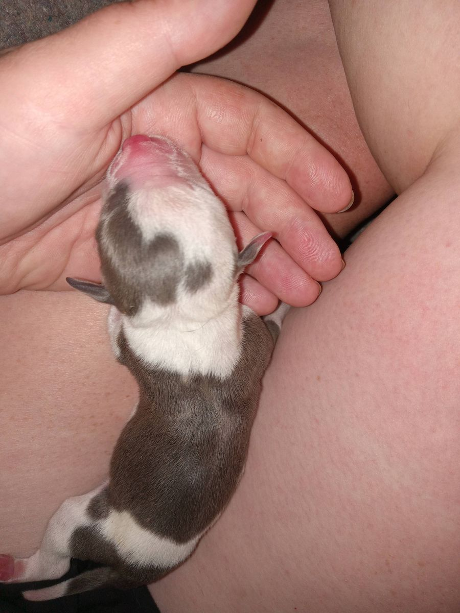
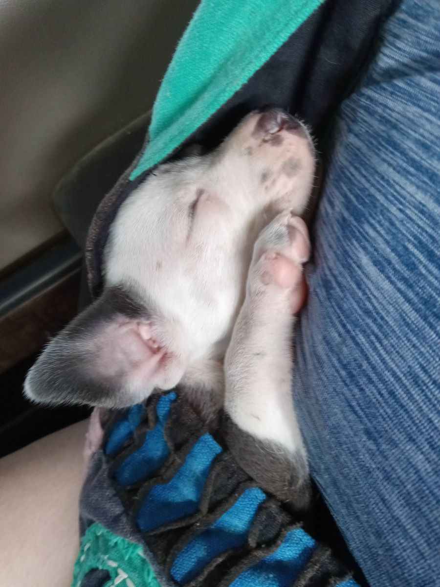
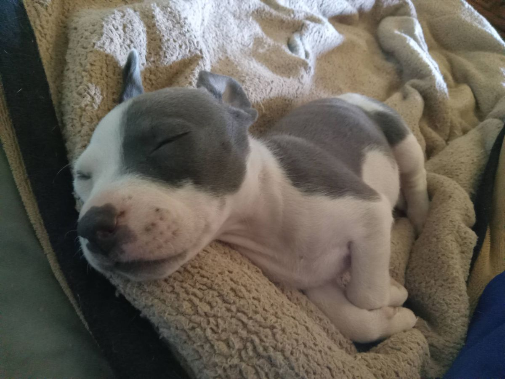
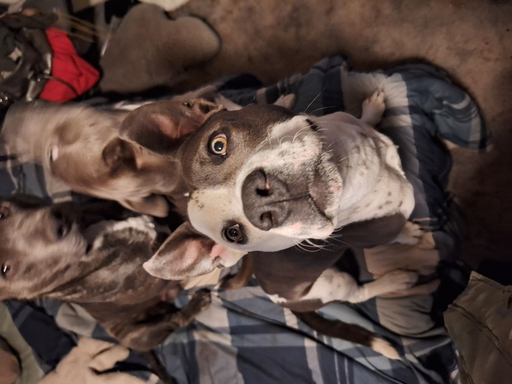
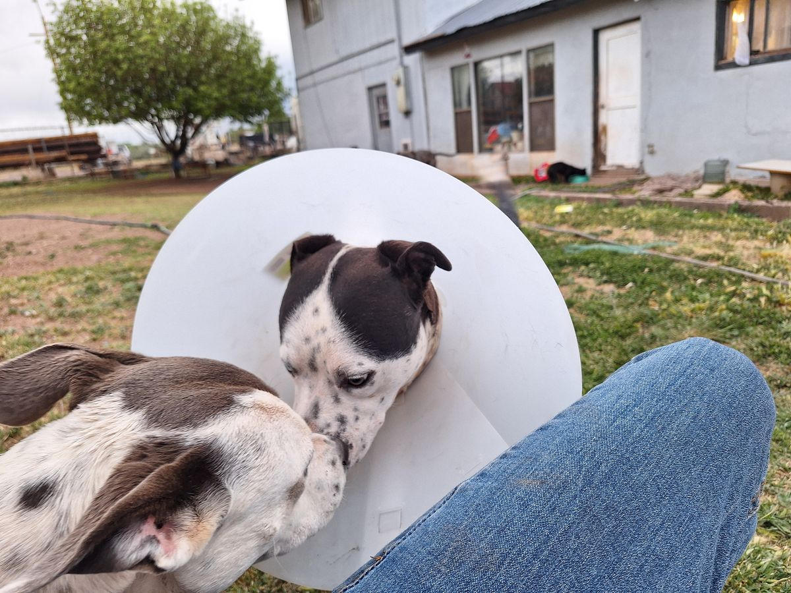
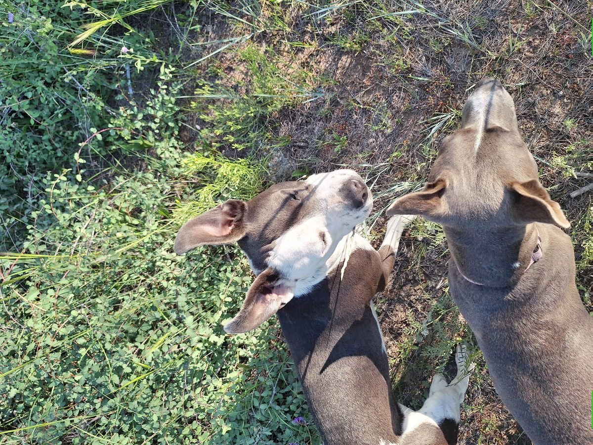
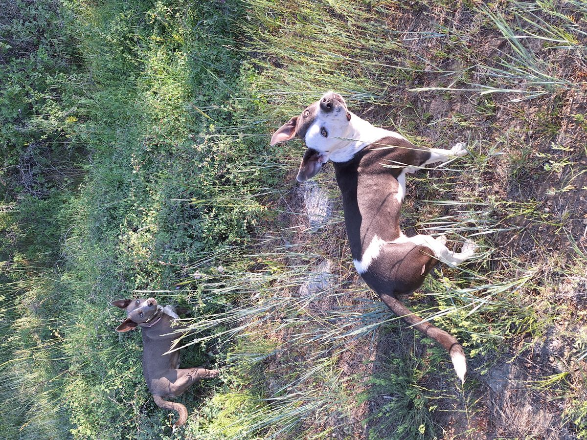
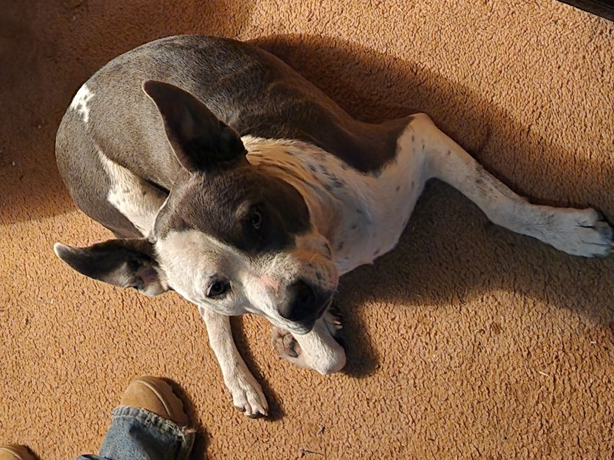
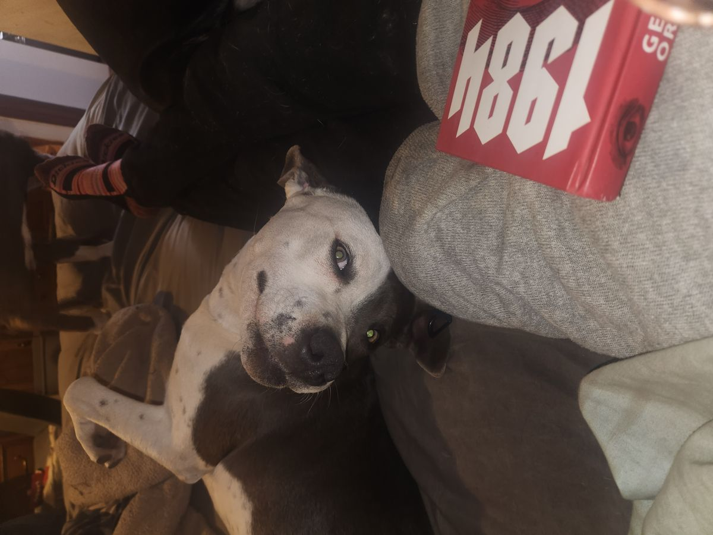
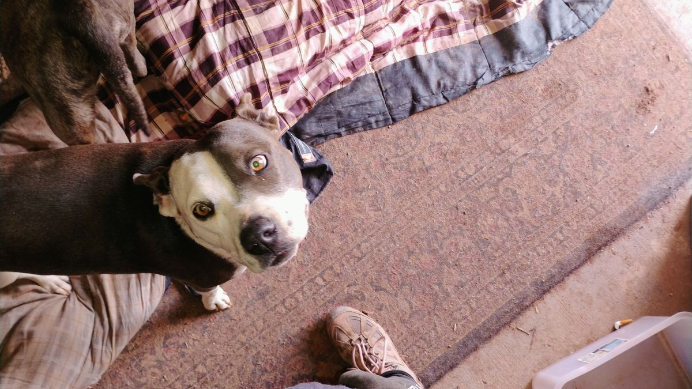

Muffin
In loving memory · the dog who inspired it all















July 26, 2023 ✦ June 5, 2025
Beloved rescued pitbull · The heart of the Muffin Series
Playful · Tenacious · Stubborn · Zeroed-in
Who She Was
Born to Rosie, a rescued pitbull, Muffin was the runt of her litter: a gray-and-white girl with a half masked face, gray on the left, white on the right, that made her look endlessly curious. She never felt sorry for herself. She got up, she wagged, she loved.
Her favorite game was fierce tug-of-war over a pillow. She ignored every distraction, dug in with everything she had, and when she finally ripped it away, she won like it mattered. Playful to the last, stubborn the whole way through, and zeroed in on the people she loved.
From about six months old, most days her small body shook with seizures. Heat set them off, so her family kept her world at 75 degrees or below and held her through every one. The vet suspected a liver shunt; they were saving for the testing when she crossed the rainbow bridge due to extensive seizures at almost two.
Twenty-six books carry her name and her lesson: that asking for help is brave, and that a body which works a little differently is still a wonderful body.